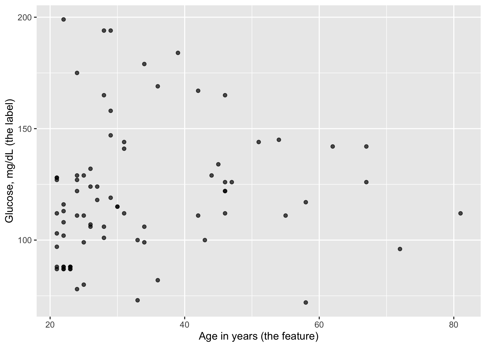
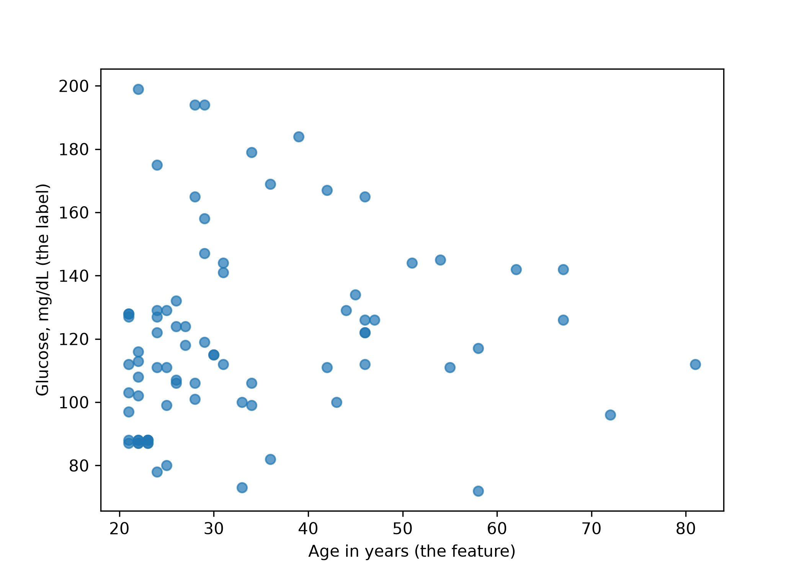

Every cell on this page is a real R or Python cell. Open day3-01-supervised-learning.qmd in your editor and run them one at a time — the output printed here is what you should get.
13.1 Objectives
Say what the learning algorithm, the fitted model and the dataset each contribute to a prediction, pointing at one line of code for each.
Fit the same model in both languages, read its two parameters, and predict a value both inside and outside the range of the data.
Swap the learning algorithm for a decision tree without changing anything else, and describe how the shape of the prediction changes.
13.2 Why this, here
In Chapter 3 you fitted a model with one call and read a score off the test set. The fitting itself was a black box: fit() went in, coefficients came out. Today we open it. This exercise sets up the pieces — data, algorithm, fitted parameters, prediction — so that Chapter 14 can ask what “best fit” means and Chapter 15 can ask how the best fit is found.
13.3 The data we fit to
Today’s outcome is a blood glucose measurement and the single predictor is age. The question behind it: does knowing a patient’s age tell you anything useful about their glucose? The answer today is more interesting than you might expect.
data/diabetes.csv is the module’s case study and it is a synthetic replacement for a dataset that was withdrawn; read Section B.5 once before you quote anything from it. It carries the original’s zeros-as-missing defect: five rows record a glucose of 0, which is not a measurement. We drop those rows and keep the first 80 of what is left, small enough to see every point on a scatter plot.
ggplot(glu, aes(x = age, y = glucose)) +geom_point(alpha =0.7) +labs(x ="Age in years (the feature)",y ="Glucose, mg/dL (the label)")

import matplotlib.pyplot as pltfig, ax = plt.subplots()ax.scatter(glu["age"], glu["glucose"], alpha=0.7)ax.set_xlabel("Age in years (the feature)")ax.set_ylabel("Glucose, mg/dL (the label)")plt.show()

Look at the scatter before you fit anything, and write down what slope you expect. You will be asked for it again at the end.
13.4 The three things that make a prediction
What it is
In the code below
The learning algorithm
a procedure for turning data into parameters
linear_reg(), LinearRegression()
The fitted model
the parameters it produced, and nothing else
\(\hat\beta_0 = 110.30\), \(\hat\beta_1 = 0.289\)
The dataset
what the algorithm was allowed to see
the 80 rows in glu
The algorithm is chosen by you, the parameters are chosen by the data, and the prediction is a consequence of both. Students conflate the first two constantly: “linear regression predicted 123” is wrong, because linear regression predicts nothing until it has been shown a dataset.
In machine learning notation the model is written
\[y = \beta_0 + \beta_1 x_1\]
where \(y\) is the label (glucose), \(x_1\) the feature (age), \(\beta_0\) the intercept — often called the bias — and \(\beta_1\) the weight on the feature, which is the slope. Both are parameters: numbers the fitting procedure returns.
The two agree to every decimal worth printing, because both solve the same least-squares problem on the same 80 rows. Chapter 16 shows you the algebra they are solving and verifies it by hand.
Warningcoef() does not work on a parsnip fit
coef(ls_fit) returns NULL — silently, with no error. A model_fit object wraps the engine’s fit rather than being one, so you have to reach inside with extract_fit_engine() first. Passing the NULL to geom_abline() then fails some distance from the line that caused it, which is the most annoying class of bug there is.
A 45-year-old gets a predicted glucose of about 123.3. So does a 10-year-old, at about 113.2 — even though the youngest patient in the data is 21, and these are adults with no children among them. The model is an infinite line. It will return a number for an age of 200, or of −40, and nothing in the code will object.
NoteExtrapolation is a modelling decision, not a software error
The line is fitted on ages 21 to 81. Using it at 10 asserts that the same relationship holds in children, which nothing in these data supports. Every model will happily extrapolate; the restraint has to come from you. Note also what the model does not give you: any sense of how confident it is. That is a statistical question and this is a prediction course.
13.7 Task 1 — Predict from the parameters, not from the function
predict() is a convenience. Reproduce it with arithmetic: compute the predicted glucose for a 60-year-old from the two coefficients.
# Replace every ______ below, then run this cell.source("checks/checks.R")b <-coef(extract_fit_engine(ls_fit))pred_60 <- ______ + ______ *60check_metric_range(pred_60, 120, 135, "predicted glucose at age 60")
# Replace every ______ below, then run this cell.import sys; sys.path.append("checks")from checks import*pred_60 = ______ + ______ *60check_metric_range(pred_60, 120, 135, "predicted glucose at age 60")
TipStuck?
The two numbers you need are the ones the fitting step printed. In R they come out of coef() in the order intercept, then slope; in Python they are two separate attributes of the fitted object.
13.8 Task 2 — Make the line earn its place
A fitted line is only worth having if it beats a predictor that does no learning. Compute the mean squared error of the line on these 80 rows, and the mean squared error of predicting the mean glucose for everybody.
Both numbers are computed on the rows the model was fitted to, which Chapter 3 told you is not evidence of anything. Today that is deliberate: this exercise is about what fitting does, not about how well it generalises. Read every number on this page as in-sample.
# Replace every ______ below, then run this cell.source("checks/checks.R")pred_line <-predict(ls_fit, new_data = glu)$.predmse_line <-mean((glu$glucose - ______)^2)mse_mean <-mean((glu$glucose - ______)^2)check_beats_baseline(mse_line, mse_mean)
# Replace every ______ below, then run this cell.import sys; sys.path.append("checks")from checks import*mse_line = np.mean((y - ______)**2)mse_mean = np.mean((y - ______)**2)check_beats_baseline(mse_line, mse_mean)
The check prints the line’s error as a percentage of the baseline’s. Write the percentage down before you read the next section.
13.9 The result that should bother you
The line’s in-sample mean squared error is 847.5. The mean squared error of ignoring age entirely and predicting 119.9 for everyone is 863.2. Fitting removed 1.8% of the squared error.
Now destroy the relationship on purpose and fit again. Shuffling the age column breaks any link between a patient’s age and their glucose while leaving both distributions exactly as they were.
Shuffled age cannot predict glucose. Any apparent fit is coincidence, and its error is what “no relationship at all” looks like in these units.
The shuffled fit’s error is around 850 in R and around 861 in Python — the two seeds shuffle differently — against 847.5 for the real age column and 863.2 for the baseline. The real predictor buys you almost nothing that a deliberately broken one does not.
The algebra in Chapter 16 is exact, the fit is genuinely the best straight line there is, and the model is still not worth deploying. A minimum is not the same thing as a small number.
Keep this: the entire day is about finding the best line, and the best line here is nearly useless. Being able to hold both of those at once is the point.
13.10 Task 3 — Change the algorithm, keep everything else
A decision tree is a different learning algorithm applied to the identical dataset and the identical question. You meet trees properly in Chapter 26; for now, swap one line and look at the shape of what comes out.
# Replace every ______ below, then run this cell.library(rpart); library(rpart.plot)dt_model <-decision_tree(mode ="regression") |>set_engine("______")dt_fit <- dt_model |>fit(glucose ~ age, data = glu)rpart.plot(extract_fit_engine(dt_fit), roundint =FALSE)
TipStuck?
The engine is the package that does the work, exactly as "lm" was for linear_reg(). For trees in R it is the recursive-partitioning package, and the string is its name.
# Replace every ______ below, then run this cell.from sklearn.tree import DecisionTreeRegressor, export_texttree_reg = DecisionTreeRegressor(max_depth=3, min_samples_leaf=5).fit(______, ______)print(export_text(tree_reg, feature_names=["age"]))
TipStuck?
The tree takes the same two arguments the linear model took, in the same order.
Now plot both models’ predictions over the data. The line is a line; the tree is a staircase, constant within each age band it chose.
The tree’s in-sample mean squared error is lower than the line’s: 685.7 in R with rpart’s default pruning, 677.9 in Python with a depth of 3. Both are well below the line’s 847.5. The tree is not better. It has more parameters — one mean per leaf rather than two numbers for the whole dataset — and more parameters always fit the rows you fitted them to more closely. Chapter 26 is where that argument gets settled.
NoteThe two trees are not the same tree
rpart and scikit-learn choose splits the same way but stop differently: rpart prunes using a complexity parameter and cross-validation, scikit-learn stops when you tell it to. Ours end up with six leaves and seven respectively. Unlike the linear coefficients, which agreed to the decimal, the trees are a genuine difference between the two libraries’ defaults, and you should expect to have to state tree-stopping rules explicitly whenever you report one.
13.11 Task 4 — The role of the dataset
Refit both models on the first 30 rows only, and predict glucose for a 25-year-old with each of the four fitted models.
# Replace every ______ below, then run this cell.glu30 <- glu |>slice(______)ls_fit30 <- lm_model |>fit(glucose ~ age, data = ______)dt_fit30 <-decision_tree(mode ="regression") |>set_engine("rpart") |>fit(glucose ~ age, data = ______)at25 <-data.frame(age =25)c(line80 =predict(ls_fit, at25)$.pred, line30 =predict(ls_fit30, at25)$.pred,tree80 =predict(dt_fit_shown, at25)$.pred, tree30 =predict(dt_fit30, at25)$.pred)
# Replace every ______ below, then run this cell.glu30 = glu.head(______)X30, y30 = glu30[["age"]], glu30["glucose"]lin30 = LinearRegression().fit(______, ______)tree30 = DecisionTreeRegressor(max_depth=3, min_samples_leaf=5).fit(______, ______)at25 = pd.DataFrame({"age": [25]}){"line80": lin_reg.predict(at25)[0], "line30": lin30.predict(at25)[0],"tree80": tree_shown.predict(at25)[0], "tree30": tree30.predict(at25)[0]}
Answer in writing, in one sentence each.
Which model’s prediction for a 25-year-old moved more when 50 rows were taken away, and by how much?
The learning algorithm did not change between the two fits. What did?
On 30 rows the rpart tree has two leaves rather than six. What has the algorithm concluded, and is it wrong to conclude it?
13.12 Reflection
A colleague says “the model says glucose rises by 0.29 mg/dL per year of age”. Rewrite that sentence so it is defensible, given everything on this page.
You chose linear regression before seeing the data and the tree after. Which of the two decisions is more dangerous, and why?
13.13 Stretch
NoteStretch 1 — A predictor that works
Refit the line with mass (body mass index) as the predictor instead of age, on the same 80 rows, and compare the in-sample MSE with the baseline. Then ask the question this exercise cannot: is the comparison between the two predictors fair, given that you chose the second one after seeing the first one fail?
NoteStretch 2 — All 763 rows
Repeat the fit on every row with a non-zero glucose rather than the first 80. The slope roughly doubles, to about 0.52, and the scatter looks no more convincing. Which of the two slopes would you report, and what does your answer imply about reporting a coefficient from a subset at all?
13.14 What you can and cannot now claim
Can: that you can fit, read and apply a two-parameter model in both languages, swap the learning algorithm without touching anything else, and state what the dataset contributed to the result.
Cannot: that this line is the best one. We never defined “best” — we used whatever lm() optimises, which happens to be squared error. That choice does real work, and it is Chapter 14.